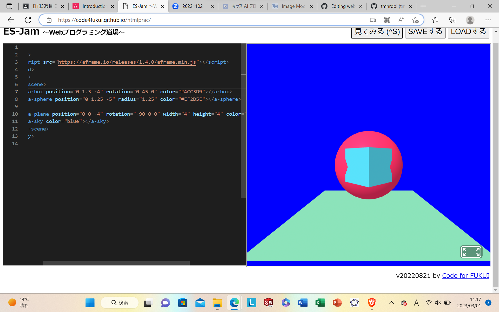
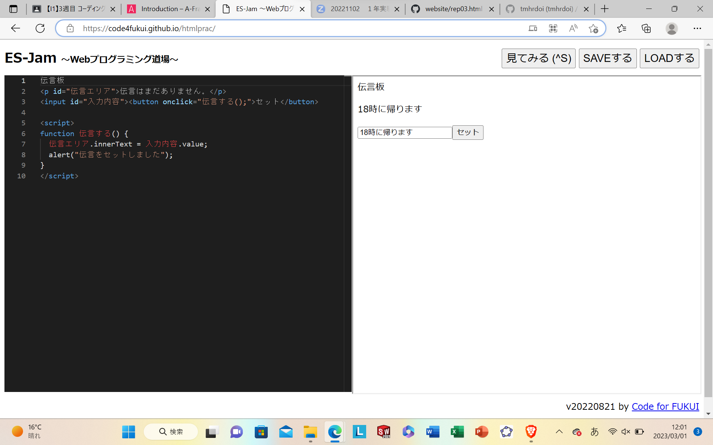

第3週目
3-1 JavaScript体験：VR空間を作る

3次元空間
1.内容
A-FRAMEで図形を作るプログラムをwebプログラミング道場にコピペし、値を変えて自分の好きな図形を作る。
2.感想
数値を変えて図形の大きさや向き、高さを変えるのは直感的にするのは難しかったので慣れていきたい。
3-2 JavaScript体験：伝言プログラムを作る

伝言板
1.内容
webプログラミング道場でJavaScriptというプログラミング言語を使い伝言板を作る。
2.感想
あまり使ったことのないプログラミング言語で、エラーが出ても自分でどこが間違っているかが分かりにくかったので、
慣れていきたい。
3-3 JavaScriptプログラムの３次元空間の体験
1.内容
VRゴーグルを使ってwebプログラミング道場で作った物体を3次元空間で移動させたり、ボールを打ち出したりする。
2.感想
自分で作った物体を動かしたりすることが出来たので、プログラムで色んな物を作ってみたい。